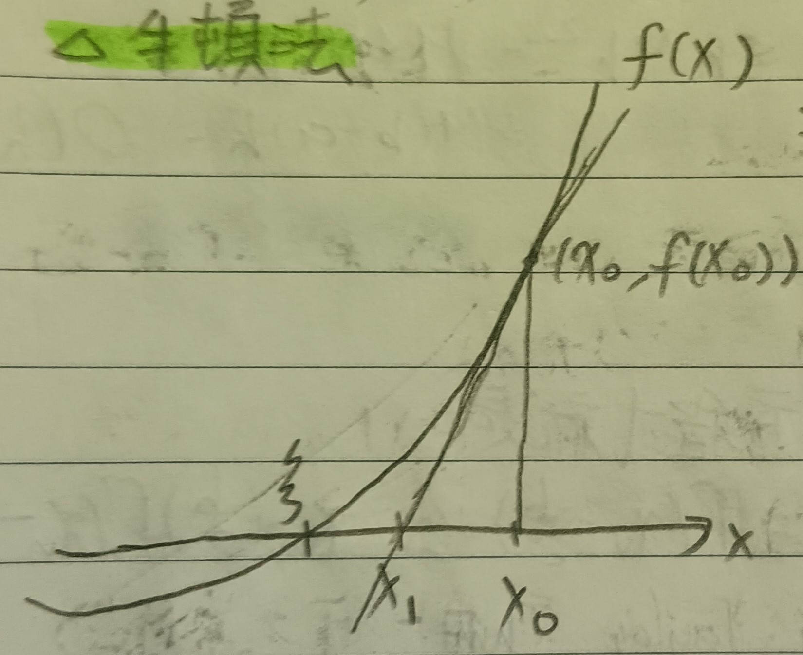

這份筆記是關於各式的數值逼近方法。
積分的計算
定義 1：黎曼和逼近 (Riemann Sum Approximation)
考慮\(\int_a^b f(x)\)。把\([a,b]\)分成\([x_0,x_1,\cdots,x_n]\)，其中每段等距，即 \[ x_i-x_{i-1}=\frac{b-a}{n}=h \] 我們有 \[ \int_{x_{v-1}}^{x_v}f(x)dx\approx f(x_v)h \] 令\(J=\int_a^b f(x)\)，可見 \[ J\approx f(x_1)h+f(x_2)h+\cdots+f(x_n)h \] 這個方法稱為黎曼和逼近。
註記 1-1
在黎曼和逼近中有則\(|J-\sum f(x_i)h|\leq
O(h)\)。
證明：由積分均值定理(這裡的定理3)可知存在\(\xi_v\in[x_{v-1},x_v]\)使得 \[ \int_{x_{v-1}}^{x_v}f(x)dx=f(\xi_v)h \] 而由微分均值定裡(這裡的定理4)可知存在\(\eta_v\in(\xi_v,x_v)\)使得 \[ f(\xi_v)-f(x_v)=f'(\eta_v)h \] 故 \[ \left|\int_{x_{v-1}}^{x_v}f(x)dx-f(x_v)h\right|=|f(\xi_v)h-f(x_v)h|=|f'(\eta_v)|h^2\leq Mh^2 \] 其中\(M\)是使\(|f'(x)|\leq M\), \(\forall x\in[a,b]\)的常數。則 \[ \left|\int_{x_{v-1}}^{x_v}f(x)dx-f(x_v)h\right|=O(h^2) \] 故 \[ \begin{aligned} |J-\sum f(x_i)h|&\leq nMh^2\\ &=M\times(nh)\times h\\ &=M(b-a)h=O(h) \end{aligned} \] QED
定義 2：梯形逼近 (Trapezoid Approximation)
使用和定義1一樣的方式分割\([a,b]\)，在區間\([x_{v-1},x_v]\)中作函數過\(x_v-h/2\)的切線(見下圖1)。
我們用梯形下方面積和來估計積分值。
註記 2-1
一樣定義\(J=\int_a^b f(x)\)，則 \[ |J-\sum\textcolor{red}{\mbox{切線下面積}}|\leq O(h^2) \]
證明：切線方程式是 \[ \phi(x)=f\left(x_v-\frac{h}{2}\right)+\left(x-x_v+\frac{h}{2}\right)f'\left(x_v-\frac{h}{2}\right) \] 而由泰勒定裡，存在\(\xi\)使得 \[ f(x)=\phi(x)+\frac{1}{2}\left(x-x_v+\frac{h}{2}\right)^2f''(\xi) \] 故用和定理1中一樣的方法，可以有 \[ \left|\int_{x_{v-1}}^{x_v}f(x)dx-\int_{x_{v-1}}^{x_v}\phi(x)dx\right|\leq Mh^3 \] 故也有 \[ |J-\sum\textcolor{red}{\mbox{切線下面積}}|\leq O(h^2) \] QED
定義 3：辛普森方法 (Simpson's Method)
使用和定義1一樣的方式分割\([a,b]\)，令\(n=2m\)，考慮經過\((x_{v-1}, f(x_{v-1})), (x_v,f(x_v)), (x_{v+1}, f(x_{v+1}))\)三點的二次函數(見下圖2)。
我們用二次函數下的面積和來估計積分值。
註記 3-1
一樣定義\(J=\int_a^b f(x)\)，則 \[ |J-\sum\textcolor{red}{\mbox{二次函數下面積}}|\leq O(h^4) \]
證明：該二次函數的方程式是： \[ y=f(x_{v-1})+(x-x_{v-1})\frac{f(x_v)-f(x_{v-1})}{h}+\frac{1}{2}(x-x_{v-1})(x-x_{v-1}-h)\times\frac{f(x_{v+1})-2f(x_v)+f(x_{v-1})}{h^2} \] 令 \[ J_v=\int_{x_{v-1}}^{x_v}f(x)dx \] 則 \[ \begin{aligned} J_{v+1}+J_v&\approx\int_{x_{v-1}}^{x_{v+1}}ydx\\ &=\frac{h}{3}(f(x_{v-1})+4f(x_v)+f(x_{v+1})) \end{aligned} \] 而由泰勒定理，存在\(\xi\)使得 \[ f(x)=f(x_v)+f'(x_v)(x-x_v)+\frac{f''(x_v)}{2!}(x-x_v)^2+\frac{f'''(x_v)}{3!}(x-x_v)^3+\frac{f^{(4)}(\xi)}{4!}(x-x_v)^4 \] 同梯形逼近可以知道 \[ \left|J_{v-1}+J_v-\int_{x_{v-1}}^{x_{v+1}}ydx\right|\leq O(h^5) \] 故 \[ |J-\sum\textcolor{red}{\mbox{二次函數下面積}}|\leq O(h^4) \] QED

迭代
這裡我們想考慮一個問題：給定一個函數\(f(x)\)，我們想找到\(\xi\)使得\(f(\xi)=0\)。
定義 4：牛頓法 (Newton Method)
選定\(x_0\)，作\(f\)過\((x_0,f(x_0))\)的切線，交\(x\)軸於\(x_1\)。再作\(f\)過\((x_1,f(x_1))\)的切線，如此反覆(見下圖4)。
易知 \[ x_{n+1}=x_n-\frac{f(x_n)}{f'(x_n)} \] 我們想找出\(x_n\to\xi\)的條件。
註記 4-1
令\(h_n=\xi-x_n\)，則存在某個\(\mu\)使得\(|h_{n+1}|\leq\mu h^2_n\) (其實需要一些\(f\)的條件，等一下會講清楚)。
證明：我們有 \[
h_{n+1}=\xi-x_{n+1}=\xi-x_n-\frac{f(\xi)-f(x_n)}{f'(x_n)}
\] 而由泰勒定理，存在\(\eta\)使得 \[
f(\xi)=f(x_n)+(\xi-x_n)f'(x_n)+\frac{1}{2}(\xi-x_n)^2f''(\eta)
\] 塞回上式，得 \[
h_{n+1}=\frac{-f''(\eta)}{2f'(x_n)}h^2_n
\] 於是，如果：
1. 存在\(M\)使得\(|f''(x)|\leq M\)
2. 存在\(c\)使得\(|f'(x)|\geq c>0\)
則\(|h_{n+1}|\leq\mu
h^2_n\)。QED
於是，如果\(\mu<1\)，那就有\(x_n\to\xi\)了。

定義 5：不動點 (Fixed Point)
給定函數\(\phi(x)\)，不動點\(\xi\)即使得\(\phi(\xi)=\xi\)的點。
註記 5-1
可以用不動點找根。
說明：考慮\(\phi(x)=x-c(x)f(x)\)，其中\(c(x)\)是一個非零函數。若\(\phi\)有不動點\(\xi\)，則 \[ \xi=\phi(\xi)=\xi-c(\xi)f(\xi) \] 於是可知\(f(\xi)=0\)。
註記 5-2
隨意找一個點\(x_0\)，令\(x_{n+1}=\phi(x_n)\)。若\(\{x_n\}\)收斂到某個\(\xi\)，則\(\xi\)是不動點。
註記 5-3
若對於在所有在某區間\(I\)內的\(x\)，且\(I\)中有不動點\(\xi\)。且存在某個\(q\)使得\(|\phi'(x)|\leq
q<1\)。則對任意一個\(x_0\in
I\)，有\(x_n\to\xi\)。
證明：因為\(x_{n+1}-\xi=\phi(x_n)-\phi(\xi)\)。我們希望說明\(|x_{n+1}-\xi|\leq q^n|x_1-\xi|\)。我們有 \[ \begin{aligned} |x_{n+1}-\xi|&=|\phi(x_n)-\phi(\xi)|\\ &\leq |\phi'(\eta)||x_n-\xi|\\ &\leq q|x_n-\xi|\\ &\leq\cdots\\ &\leq q^n|x_1-\xi| \end{aligned} \] 中間的\(\eta\)是微分均值定理(這裡的定理4)的\(\phi(x_n)-\phi(\xi)=\phi'(\eta)(x_n-\xi)\)。故\(n\to\infty\)時\(|x_{n+1}-\xi|\to 0\)，即\(x_n\to\xi\)。QED
定義 5-3-1：壓縮函數 (Contractive Function)
滿足\(|\phi'(x)|\leq
q<1\)的函數\(\phi\)稱為壓縮函數。
回到找根的問題，令\(\phi(x)=x-c(x)f(x)\)，則\(\phi'(x)=1-c'(x)f(x)-c(x)f'(x)\)，且\(\phi'(\xi)=1-c'(\xi)f(\xi)-c(\xi)f'(\xi)\)。若\(f(\xi)=0\)，則\(\phi'(xi)=1-c(\xi)f'(\xi)\)。假設\(f'\)非零，令\(c(x)=\frac{1}{f'(x)}\)，則\(\phi'(\xi)=0\)。由於\(\phi'\)連續，故有一個在\(\xi\)附近的區間使得在區間中\(|\phi'(x)|<1\)。且有 \[ \phi(x)=x-\frac{f(x)}{f'(x)}, \phi'(x)=\frac{f(x)f''(x)}{f'(x)^2} \] 沿用定義4與註記4-1中的符號，有 \[ |h_{n+1}|=|\phi(x_n)-\phi(\xi)|=|\phi'(\eta)||x_n-\xi|=|\phi'(\eta)||h_n| \] 如此重複迭代，也會有註記4-1的結論。
史特靈公式
定理 6：史特靈公式 (Stirling's Formula)
我們有一個估計\(n!\)的公式，形如：
\[
\frac{n!}{\sqrt{2\pi}n^{n+1/2}e^{-n}}\to 1
\] 當\(n\to \infty\)。
證明：我們會在此證明存在常數\(\alpha\)使得 \[
\alpha n^{n+1/2}e^{-n}<n!<\alpha
n^{n+1/2}e^{-n}\left(1+\frac{1}{4n}\right)
\] 至於\(\alpha=\sqrt{2\pi}\)的證明，可以看[這裡]。
在\([1,\infty)上，\)考慮\(\phi(x)=\log x\)。定義 \[
A_n=\int_1^n\log xdx=n\log n-n+1
\] 我們考慮\(A_n\)的一個逼近\(T_n\)。具體來說，是用梯形逼近來逼近\(A_n\)。把\([1,n]\)分成等間距的\(n-1\)個區間(\(\Delta x=1\))，令 \[
T_n=\frac{1}{2}(\mbox{上和}+\mbox{下和})
\] 即下圖6中的梯形面積和。
具體寫下來就是 \[
\begin{aligned}
T_n&=\log 2+\log 3+\cdots+\log(n-1)+\frac{1}{2}\log n\\
&=\log n!-\frac{1}{2}n
\end{aligned}
\] 我們希望說明當\(n\)很大時有\(A_n\approx T_n\)。令\(a_n=A_n-T_n\)，如果\(\{a_n\}\)有界的話，那麼 \[
T_n=A_n\left(1-\frac{a_n}{A_n}\right)
\] 於是就有\(T_n\to
A_n\)了(當\(n\to\infty\)時，\(T_n, A_n\to
\infty\))。也就是說我們只需要說明\(\{a_n\}\)有界就好。首先我們估計\(a_{n+1}-a_n\)，我們有 \[
a_{n+1}-a_n=(A_{n+1}-A_n)-(T_{n+1}-T_n)
\] 令\(a_1=0\)，由圖形易知\(a_n\geq 0\)且單調遞增。
在區間\([k,k+1]\)中，作過\((k+1/2,\log (k+1/2))\)的切線，如下圖7。
我們可以知道 \[ \textcolor{red}{\mbox{紅色區域}=a_{k+1}-a_k} \] 則 \[ \begin{aligned} a_{k+1}-a_k&<\textcolor{blue}{\mbox{切線下面積}}-\mbox{梯形面積}\\ &=\log\left(k+\frac{1}{2}\right)-\frac{1}{2}\log k-\frac{1}{2}\log(k+1)\\ &=\frac{1}{2}\log\left(1+\frac{1}{2k}\right)-\frac{1}{2}\log\left(1+\frac{1}{2(k+1/2)}\right)\\ &=\frac{1}{2}\log\left(1+\frac{1}{2k}\right)-\frac{1}{2}\log\left(1+\frac{1}{2k+1}\right) \end{aligned} \] 於是 \[ \begin{aligned} a_n&=(a_n-a_{n-1})+(a_{n-1}-a_{n-2})+\cdots+(a_2-a_1)\\ &<\frac{1}{2}\log\frac{3}{2}-\frac{1}{2}\log\left(1+\frac{1}{2n}\right)\\ &<\frac{1}{2}\log\frac{3}{2} \end{aligned} \] 於是知\(\{a_n\}\)是有界的。且因為\(\{a_n\}\)又單調遞增，故\(\{a_n\}\)收斂(見這裡的定理6)。令\(a_n\to a\)，則 \[ a-a_n<\frac{1}{2}\log\left(1+\frac{1}{2n}\right) \] 回到\(A_n\)和\(T_n\)，因為\(A_n-T_n=a_n\)，故有 \[ \begin{aligned} &\log n!=1-a_n+\left(1+\frac{1}{2n}\right)\log n-n\\ \Rightarrow&n!=\alpha_n n^{n+1/2}e^{-n} \end{aligned} \] 其中\(\alpha_n=e^{1-a_n}\)。令\(\alpha=e^{1-a}\)，有 \[ 1<\frac{\alpha_n}{\alpha}=e^{a-a_n}<e^{\frac{1}{2}\log\left(1+\frac{1}{2n}\right)}=\sqrt{1+\frac{1}{2n}}\leq 1+\frac{1}{4n} \] 故有 \[ \alpha n^{n+1/2}e^{-n}<n!<\alpha n^{n+1/2}e^{-n}\left(1+\frac{1}{4n}\right) \] QED